Fields and amounts
Every rule that paints this component, in one file. Colour through a role, geometry straight from a primitive.
What it is
The two places a person types a number into this product: how much to deposit, and how much to stake. One field, one label above it, and a row of chips beside it that fill the field with a common amount so most people never type at all.
Everything about it is built for a thumb and a hurry. The figure is 18px, larger than any other text a person enters, because it is money and it is being confirmed at a glance. The chips are the fast path and the field is the exact one, and the two write to the same value.
Anatomy
Which part is which, in the product's own words. Every class named here is one this file styles, and the build fails if it is not.
.field-label- the small caps label above a field. On its own it is the only part of this component that appears outside a money context..amount-row- the row that holds the currency mark and the field, so the mark reads as part of the field rather than as a word before it..amount-input- the field. 18px figure, hairline edge, and the one control in this system whose focus ring has to out-specify its ownoutline:none..quick- the chip row: the common amounts, and the reason most deposits need no typing..addr- the same field carrying a wallet address instead of a figure: mono face, smaller, because an address is read character by character and a proportional face makes that harder.
Live
The component in the markup it ships with, quoted from the frozen kit, inside the product's own wrapper and painted by components/index.css alone. Each frame is a page of its own, so the width under the title is a real viewport and the media queries answer to it.
Every rule in input.css is scoped under dialog.app-dialog, so the field is shown inside the dialog it lives in.
The states a state actually is, an attribute or a class, rendered. Hover and focus stay in the table on the component page: faking them with a stand class would make the specimen describe itself instead of the product.
Also rendered inside
The same markup, shown once on the page of the component that owns it. Nothing here is a second copy.
States, as they look
Photographs, not renderings. Each was taken in the specimen linked beside it with a REAL pointer, a real Tab and the mouse button really held down (ui-kit/_verify/states.cjs); nothing here is a state faked with a stand class, which is the rule this section used to be missing because of. One row per distinct FACE: two elements that measure the same at rest are one picture, however many screens carry them, and that grouping is computed rather than chosen. The pictures go stale the moment a rule changes, so each one records the files it was taken from and python3 ui-kit/_states.py fails when their bytes move.
The field at rest, hovered and focused, in the deposit sheet. Rest is the well: a darker ground than the sheet, a hairline, and the figure in the primary ink. Focus is the system ring plus a brass edge, and it is the one place a component reaches past :focus-visible on purpose.
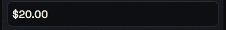
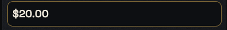
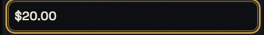
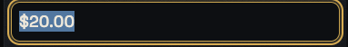
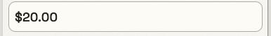
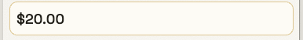
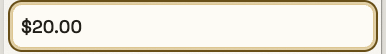
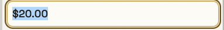
A quick-amount chip, unselected: the graphite chip, hover on the ground and press on the pressed stone.
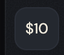
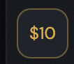
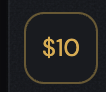
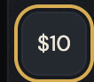
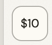
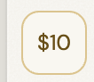
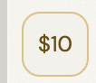
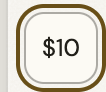
The same chip SELECTED, and this is a state carried by a class rather than by a pseudo, because the selection survives the pointer leaving. Brass tint, brass edge, brass label, bold.
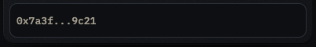
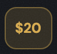

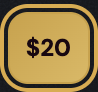
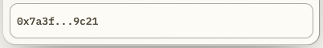

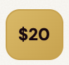
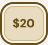
The same field on the states specimen, where the markup ships the attribute rather than a stand class.

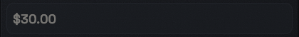


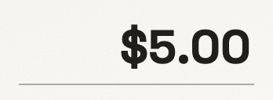

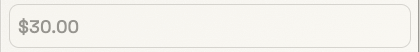

Not staged: focus. No specimen puts this one where the state can be raised, which is a specimen debt and not a missing rule.
The address variant. Same well, mono face, and the figure size drops because an address is not a figure.

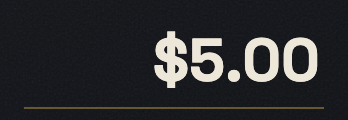
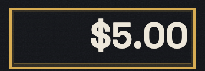
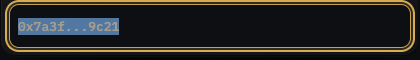

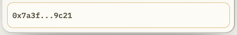
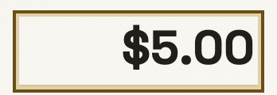
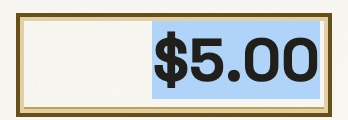
The stake field in the bet panel. Same anatomy on a different plate, which is why it measures as its own face.
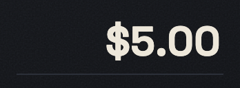
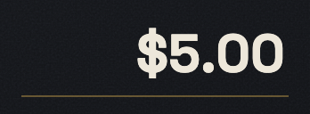
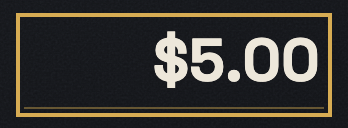
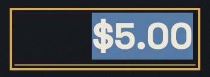

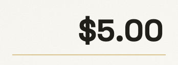
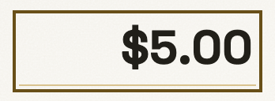
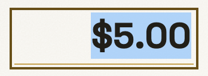
The selected chip inside the bet sheet, which is the same decision on the sheet's own ground.
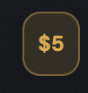

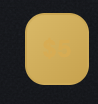
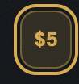
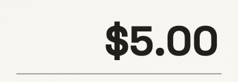
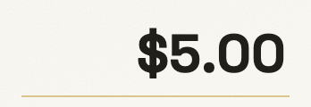
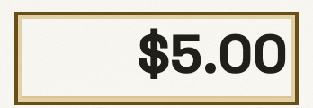

When to use
The judgement a generator cannot read out of css, and the reason ui-kit/authored/input.md exists.
Where a person enters an amount, and that is two flows: funding and staking. Both are money, both are confirmed by a brass action next to them, and both put the field inside a sheet.
For anything that is not money, this is the wrong component and the system does not currently have the right one. A search box, a comment box and a form field are not here, and the honest answer when one is needed is a row in ui-kit/docs/backlog.md, not a fifth use of the amount field.
The label is not optional and it is not a placeholder. A placeholder disappears the moment a person types, which is exactly when they most need to know what they are typing into.
The rule, and the anti-rule
One sentence to follow and one mistake worth naming. An anti-rule has to name the component that should have been used instead, or it is a complaint rather than an address, and the build checks that it does.
The chips and the field write the same value, so whatever a chip sets, the field shows: a person who taps 50 and then edits it is editing 50, not starting again.
Never build a quick-amount chip out of the button family: those chips are this component's, and a .state-btn or an .auth-btn in that row would answer a pointer with the brass edge of an action rather than with a selection.
Predicted: no screen has made this mistake. It is named because the chip row LOOKS like a row of small buttons and is the nearest thing in the system to one, and because the button family's own page now says the opposite thing about chips.
Roles it reads
Colour comes in only through these. Change one on the token page and it changes here and on every screen at once.
--bg-control--bg-control-hover--bg-pressed--bg-surface--bg-well--border-brass-hover--border-hairline--color-action--color-action-lit--focus-ring--glow-focus--line-brass-strong--opacity-disabled--result-won--text-brass--text-muted--text-on-brass--text-primary--tint-brass-16Classes
Every class this file styles, and how many of the 105 painted screens carry it. A zero is not automatically dead: the last column says whether the class is built at runtime, shown only in the kit, a leftover of the grey wireframes, used by a course page, or genuinely used by nothing. Gate 30 fails the build on the last kind.
| class | screens | if zero |
|---|---|---|
| .addr | 1 | |
| .amount-input | 105 | |
| .amount-row | 105 | |
| .app-case | 105 | |
| .app-dialog | 105 | |
| .bet-panel | 11 | |
| .bet-sheet | 4 | |
| .bp-amount-row | 8 | |
| .field-label | 105 | |
| .outcome-dialog | 6 | |
| .quick | 105 | |
| .reconcile-box | 7 | |
| .sel | 105 | |
| .sheet-body | 105 | |
| .win-dialog | 4 |
Where it stands
Written from
The authored half of this page is the one artefact here no gate can read: a sentence cannot be checked for being true. So it names its sources before it says anything, and the build fails when one of them does not exist. Read this first if you doubt a claim above it.
ui-kit/docs/inventory.mdL122 - "Amount field + quick-amount chips", filed L1, on the Deposit dialog and the deposit pages, states rest / selected / focus; and L123, "Field label", on dialogs and forms.- The 105 painted screens carry the label and the field, because the deposit sheet is on every one of them; the quick chips stand in the deposit dialog and in the bet sheet.
voice/docs/microcopy.md- the funding rows: the field's own label is Amount to add, and the two names for the action around it (Deposit against Add funds) are an open same-thing defect.ui-kit/specimens.map.json, theinput-statesentry, whose note says why hover and focus are NOT staged there: faking them with a stand class would make the specimen describe itself.components/input.css, andDESIGN.mdL99, which is where the 1px hairline is specified as a line rather than a distance.
What the file says
The selectors and the css, for a person about to edit them. To change this component, edit components/input.css; to change a value it reads, edit the role in components/tokens.css.
Every state rule, and what it moves
| selector | what moves |
|---|---|
| dialog.app-dialog .quick button.sel | font-weight:var(--weight-bold) |
| .quick button.sel | font-weight:var(--weight-bold) |
| dialog.app-dialog .amount-input:hover:not(:disabled) | border-color:var(--line-brass-strong) |
| dialog.app-dialog .amount-input:focus | outline:none;border-color:var(--color-action);box-shadow:0 0 0 3px var(--glow-focus) |
| dialog.app-dialog .amount-input:focus-visible | outline:var(--ring) solid var(--focus-ring);outline-offset:var(--ring) |
| dialog.app-dialog .amount-input:disabled | opacity:var(--opacity-disabled);cursor:not-allowed;background:var(--bg-surface) |
| dialog.app-dialog .quick button:hover:not(.sel) | border-color:var(--border-brass-hover);color:var(--text-brass);background:var(--bg-control-hover) |
| dialog.app-dialog .quick button.sel | background:linear-gradient(135deg,var(--color-action),var(--color-action-lit));color:var(--text-on-brass);border-color:var(--color-action) |
| dialog.app-dialog .quick button.sel:hover | background:linear-gradient(135deg,var(--color-action-lit),var(--color-action-lit)) |
| dialog.app-dialog .quick button.sel:active | background:linear-gradient(315deg,var(--color-action),var(--color-action-lit)) |
| dialog.app-dialog .quick button:active:not(.sel) | background:var(--bg-pressed) |
| .app-case :is(.bet-panel,.bet-sheet) .bp-amount-row .amount-input:hover:not(:disabled) | border-bottom-color:var(--border-brass-hover) |
| .app-case :is(.bet-panel,.bet-sheet) .bp-amount-row .amount-input:focus | border-bottom-color:var(--color-action) |
| .app-case :is(.bet-panel,.bet-sheet) .bp-amount-row .amount-input:focus-visible | outline:var(--ring) solid var(--focus-ring);outline-offset:var(--ring) |
| .app-case :is(.bet-panel,.bet-sheet) .bp-amount-row .amount-input:disabled | opacity:var(--opacity-disabled);cursor:not-allowed;border-bottom-color:var(--border-hairline) |
| .app-case :is(.bet-panel,.bet-sheet) .quick button.sel | background:var(--tint-brass-16);border-color:var(--border-brass-hover);color:var(--text-brass);font-weight:var(--weight-bold) |
The tokens these states read, on both grounds
Neither panel is a screenshot. Each carries data-theme itself, so the token resolves inside it and a role that was given a value in only one theme shows up here as a control that does not move.
--line-brass-strongConfirm betthe edge this state draws--color-actionConfirm betthe ground the control settles onto--glow-focusConfirm betthe ring, at the width and offset it ships with--focus-ringConfirm betthe ring, at the width and offset it ships with--opacity-disabledConfirm betConfirm bethow far the control fades, beside the same control at rest--bg-surfaceConfirm betthe ground the control settles onto--border-brass-hoverConfirm betthe edge this state draws--text-brassConfirm betthe label, on the ground this state puts it on--bg-control-hoverConfirm betthe ground the control settles onto--color-action-litConfirm betthe ground the control settles onto--text-on-brassConfirm betthe label, on the ground this state puts it on--bg-pressedConfirm betthe ground the control settles onto--border-hairlineConfirm betthe edge this state draws--tint-brass-16Confirm betthe ground the control settles onto--line-brass-strongConfirm betthe edge this state draws--color-actionConfirm betthe ground the control settles onto--glow-focusConfirm betthe ring, at the width and offset it ships with--focus-ringConfirm betthe ring, at the width and offset it ships with--opacity-disabledConfirm betConfirm bethow far the control fades, beside the same control at rest--bg-surfaceConfirm betthe ground the control settles onto--border-brass-hoverConfirm betthe edge this state draws--text-brassConfirm betthe label, on the ground this state puts it on--bg-control-hoverConfirm betthe ground the control settles onto--color-action-litConfirm betthe ground the control settles onto--text-on-brassConfirm betthe label, on the ground this state puts it on--bg-pressedConfirm betthe ground the control settles onto--border-hairlineConfirm betthe edge this state draws--tint-brass-16Confirm betthe ground the control settles ontocomponents/input.css
/* components/input.css
Component: input. Classes: .addr, .amount-input, .amount-row, .field-label, .quick.
Reads: --bg-control, --bg-control-hover, --bg-pressed, --bg-surface, --bg-well, --border-brass-hover, --border-hairline, --color-action, --color-action-lit, --focus-ring, --glow-focus, --line-brass-strong, --opacity-disabled, --result-won, --text-brass, --text-muted, --text-on-brass, --text-primary, --tint-brass-16
Stand: ui-kit/input.html
Stands on: 105 ui-visual screens (404.html, 500.html, active-bets-empty-new.html, active-bets-empty-resolved.html, active-bets-error.html, ...)
Colour goes through a role, geometry straight from a primitive. No em dash. */
dialog.app-dialog .field-label{font-size:var(--text-11);text-transform:uppercase;letter-spacing:.03em}
dialog.app-dialog .amount-row{display:flex;align-items:center;gap:var(--space-8)}
dialog.app-dialog .amount-input{flex:1;padding:var(--space-8);font-size:var(--text-18)}
dialog.app-dialog .quick{display:flex;gap:var(--space-8);flex-wrap:wrap}
dialog.app-dialog .quick button{padding:var(--space-8) var(--space-8);font-size:var(--text-12)}
dialog.app-dialog .quick button.sel{font-weight:var(--weight-bold)}
.field-label{font-size:var(--text-11);text-transform:uppercase;letter-spacing:.03em}
.amount-row{display:flex;align-items:center;gap:var(--space-8)}
.amount-input{flex:1;border:1px solid var(--border-hairline);padding:var(--space-8);font-size:var(--text-18)}
.quick{display:flex;gap:var(--space-8);flex-wrap:wrap}
.quick button{border:1px solid var(--border-hairline);padding:var(--space-8) var(--space-8);font-size:var(--text-12);cursor:pointer}
.quick button.sel{font-weight:var(--weight-bold)}
dialog.app-dialog .field-label{color:var(--text-muted)}
/* min-height, not padding. The field used to reach 45px because its padding
happened to add up to it; on the 4px grid the same padding lands at 41 and the
touch target is gone. A target is a rule, so it is written as one. */
dialog.app-dialog .amount-input{min-height:var(--control-44);border:1px solid var(--border-hairline);color:var(--text-primary);border-radius:var(--radius-10);font-family:var(--font-display);box-sizing:border-box;transition:border-color var(--dur-quick) ease,box-shadow var(--dur-quick) ease,opacity var(--dur-quick) ease}
dialog.app-dialog .amount-input:hover:not(:disabled){border-color:var(--line-brass-strong)}
/* :focus and :focus-visible are two different questions and this control needs both.
:focus says THE FIELD IS ACTIVE, which is true however you got there, and it is
drawn by the border and the glow below. The RING is a keyboard indicator and it
only belongs to the person who arrived by tab.
The outline:none is kept for the same reason it exists on the bet field below:
the default ring in base.css is square and this field has a 10px radius. The
rule that puts a ring back is therefore an equal-specificity rule AFTER it,
0,3,1 against 0,3,1, so source order decides and the later one wins. It had no
such rule until 2026-08-02, so outline:none at 0,3,1 beat base.css at 0,1,0 and
the field took the ring away and gave a 16 per cent brass wash back, which is
not an indicator at any alpha. */
dialog.app-dialog .amount-input:focus{outline:none;border-color:var(--color-action);box-shadow:0 0 0 3px var(--glow-focus)}
dialog.app-dialog .amount-input:focus-visible{outline:var(--ring) solid var(--focus-ring);outline-offset:var(--ring)}
dialog.app-dialog .amount-input:disabled{opacity:var(--opacity-disabled);cursor:not-allowed;background:var(--bg-surface)}
dialog.app-dialog .quick button{background:var(--bg-control);border:1px solid var(--border-hairline);color:var(--text-primary);border-radius:var(--radius-10)}
dialog.app-dialog .quick button{cursor:pointer;transition:border-color var(--dur-quick) ease,background var(--dur-quick) ease,color var(--dur-quick) ease}
dialog.app-dialog .quick button:hover:not(.sel){border-color:var(--border-brass-hover);color:var(--text-brass);background:var(--bg-control-hover)}
dialog.app-dialog .quick button.sel{background:linear-gradient(135deg,var(--color-action),var(--color-action-lit));color:var(--text-on-brass);border-color:var(--color-action)}
/* THE THREE-STEP OF A BRASS PLATE, and it needs no value of its own. Rest lights
the plate from the top left; hover takes the lit role to both stops so the
whole face comes up; press flips the angle so the light falls to the bottom
right, which is what a plate pushed IN looks like. Geometry and two roles that
were already here.
It replaces filter:brightness(1.06), which was a raw number doing a colour job:
a filter multiplies whatever is underneath, so no theme can reach it and the
same 1.06 means two different things on two grounds. */
dialog.app-dialog .quick button.sel:hover{background:linear-gradient(135deg,var(--color-action-lit),var(--color-action-lit))}
dialog.app-dialog .quick button.sel:active{background:linear-gradient(315deg,var(--color-action),var(--color-action-lit))}
dialog.app-dialog .quick button:active:not(.sel){background:var(--bg-pressed)}
dialog.app-dialog .amount-input{background:var(--bg-well)}
.app-case :is(.bet-panel,.bet-sheet) .bp-amount-row .amount-input{flex:0 1 auto;width:150px;max-width:56%;-webkit-appearance:none;appearance:none;border:0;border-bottom:1.5px solid var(--border-hairline);border-radius:0;background:transparent;outline:none;padding:0 var(--space-2) var(--space-4);line-height:var(--leading-none);font-family:var(--font-display);font-size:var(--text-30);font-weight:var(--weight-bold);color:var(--text-primary);text-align:right}
.app-case :is(.bet-panel,.bet-sheet) .bp-amount-row .amount-input:hover:not(:disabled){border-bottom-color:var(--border-brass-hover)}
.app-case :is(.bet-panel,.bet-sheet) .bp-amount-row .amount-input:focus{border-bottom-color:var(--color-action)}
/* A 1.5px underline changing colour is a state, not a focus indicator, and this is
the field a person types the size of a bet into. Same ring as everything else.
It was called "the one control in the product that took outline:none and gave
nothing back" until 2026-08-02, and there were TWO: the dialog field above did
the same thing and was not caught, because the sweep that found this one read
the declaration and not the pair of rules around it. A comment that says "the
one" is a comment the next pass trusts instead of counting. */
/* this one has to out-specify the outline:none the field above sets, so it cannot come from
the one-line default in base.css */
.app-case :is(.bet-panel,.bet-sheet) .bp-amount-row .amount-input:focus-visible{outline:var(--ring) solid var(--focus-ring);outline-offset:var(--ring)}
.app-case :is(.bet-panel,.bet-sheet) .bp-amount-row .amount-input:disabled{opacity:var(--opacity-disabled);cursor:not-allowed;border-bottom-color:var(--border-hairline)}
.app-case :is(.bet-panel,.bet-sheet) .bp-amount-row .amount-input::placeholder{color:var(--text-muted)}
.app-case :is(.bet-panel,.bet-sheet) .quick{margin-top:0;justify-content:flex-end;flex-wrap:wrap}
dialog.app-dialog .sheet-body .quick{margin-top:var(--space-12)}
.app-case :is(.bet-panel,.bet-sheet) .field-label{color:var(--text-muted)}
.app-case :is(.bet-panel,.bet-sheet) .amount-input{border:1px solid var(--border-hairline);border-radius:var(--radius-10);background:var(--bg-well);color:var(--text-primary);font-family:var(--font-display)}
.app-case :is(.bet-panel,.bet-sheet) .quick button{border:1px solid var(--border-hairline);border-radius:var(--radius-10);background:var(--bg-control);color:var(--text-primary)}
.app-case :is(.bet-panel,.bet-sheet) .quick button.sel{background:var(--tint-brass-16);border-color:var(--border-brass-hover);color:var(--text-brass);font-weight:var(--weight-bold)}
.app-case .bet-sheet .quick{gap:var(--space-8)}
.outcome-dialog .field-label{color:var(--text-muted)}
.win-dialog .reconcile-box .field-label{color:color-mix(in oklab,var(--result-won) 45%,var(--text-primary))}
.app-case .field-label{color:var(--text-muted)}
/* the destination address is not an amount: it is a value you check, so it reads as data and
never invites a keystroke */
dialog.app-dialog .amount-input.addr{display:flex;align-items:center;font-family:var(--font-mono);font-size:var(--text-13);color:var(--text-muted);overflow:hidden;text-overflow:ellipsis;white-space:nowrap}